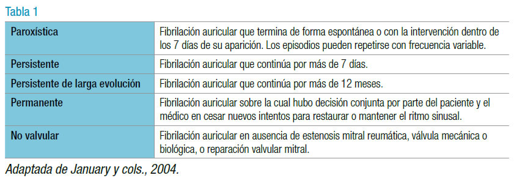

La fibrilación auricular es una taquiarritmia supraventricular con activación auricular no coordinada, que provoca disfunción mecánica de ambas aurículas. El ritmo irregular se debe a una rápida y abrumadora cantidad de impulsos eléctricos emanados del miocardio auricular que llegan al nódulo auriculoventricular (nódulo AV) conduciéndolos en forma variable (según las propiedades electrofisiológicas del nódulo AV y el balance entre el tono simpático y el parasimpático).
La frecuencia ventricular está determinada por la conducción y las propiedades refractarias del nódulo AV y la secuencia de ondas que penetran en él. Cada onda de excitación auricular que penetra lo despolariza y lo deja refractario por un tiempo, previniendo la propagación de impulsos sucesivos; esto se llama conducción oculta. Este fenómeno explica por qué las frecuencias ventriculares pueden ser más altas y difíciles de controlar cuanto menos ondas auriculares penetran en el nódulo, por ejemplo, en un aleteo en comparación con una fibrilación auricular. La guía de la ESC/EHRA de 2010 postula los siguientes criterios: "absoluta" irregularidad de los intervalos RR en el ECG de superficie. Ausencia de ondas P claras en el ECG de superficie, que puede presentar una actividad auricular aparentemente regular en algunas derivaciones, más frecuentemente en V1. Un ciclo auricular variable y con una duración < 200 ms (es decir, a una frecuencia > 300 lpm). La actualización del año 2012 de esta guía no modificó los términos de la definición.
Por su parte, la guía de la AHA/ACC/HRS del año 2014 define la fibrilación auricular como una taquiarritmia con activación auricular no coordinada y consecuente contracción inefectiva auricular, notando en el ECG de superficie:
1. Intervalos R-R irregulares (cuando la conducción auriculoventricular se encuentra presente).
2. Ausencia de ondas P distintivas.
3. Actividad auricular irregular.
La pérdida de la contracción auricular puede disminuir marcadamente el volumen minuto, en particular cuando el llenado ventricular diastólico está disminuido, como en la estenosis mitral, la hipertensión arterial, la miocardiopatía hipertrófica o la miocardiopatía restrictiva. Después de recuperar el ritmo sinusal, la función mecánica auricular puede aún fallar en algunos pacientes como consecuencia de la remodelación, según la duración de la fibrilación auricular o de la enfermedad auricular. La contractilidad ventricular no es constante durante la fibrilación auricular por la variabilidad en los tiempos de llenado diastólico. El volumen minuto puede decrecer y las presiones de llenado aumentar en comparación con el ritmo regular a igual frecuencia cardíaca.
Es la arritmia sostenida más prevalente, afecta a un 1,5% a 2% de la población general, sobre todo a la más añosa (menos del 1% en los pacientes menores de 60 años y más del 12% en los de 75 a 84 años) y se asocia a un considerable aumento de la morbimortalidad.
Las nuevas guías europeas y norteamericanas señalan que esta arritmia debe tener una duración mínima de 30 segundos para ser definida como tal.
La duración de la arritmia es un punto importante por definir, ya que una de sus principales complicaciones, el accidente cerebrovascular, se relaciona con el tiempo de permanencia de esta.
La Figura 1 muestra los porcentajes de pacientes según la duración de los episodios de fibrilación auricular en el monitoreo Holter de 7 días. Las divisiones se realizaron de acuerdo con los trabajos que mostraron un incremento del riesgo embólico: el ASSERT, más de 6 minutos; el TRENDS, más de 6 horas (5,5 horas); el Italian AT 500 Registry 24 horas y más de 30 segundos, como se menciona desde las guías de 2010 hasta la actualidad.
La fibrilación auricular puede describirse de acuerdo con la duración del episodio (Tabla 1); esta caracterización presenta relevancia clínica (p. ej., la ablación con catéter es mejor para la forma paroxística que para la persistente).
El electrocardiograma debe mostrar (Figura 2).
Irregularidad absoluta de los intervalos RR (cuando la conducción nodal AV està presente). A veces se presenta la fibrilación auricular con intervalos RR regulares (bloqueo del nódulo AV, ritmo marcapasos, o asociado a taquicardia ventricular o de la unión, donde los intervalos RR se regularizaran por la arritmia coexistente). Ausencia de onda P. Irregularidad de la actividad auricular. La longitud de ciclo auricular (intervalo entre dos activaciones auriculares consecutivas) suele ser variable y menor de 200 ms (> 300 lpm).
Varias arritmias supraventriculares, principalmente la taquicardia auricular o el aleteo auricular, pueden presentarse con ritmo de alta frecuencia ventricular e intervalo RR irregular simulando una fibrilación auricular. La mayoría de las taquicardias y aleteos auriculares presentan una longitud de ciclo mayor de 200 ms. Un registro electrocardiogràfico de 12 derivaciones suele ser necesario para el diagnóstico diferencial de la fibrilación auricular de otras taquiarritmias, ya que algunas de ellas pueden simularla en algunas derivaciones, mientras que en otras (generalmente D2 o V1) queda aclarado su diagnóstico. En ocasiones, cuando la frecuencia es muy ràpida, las maniobras de bloqueo del nódulo AV, como la maniobra de Valsalva o el masaje del seno carotídeo, o las intervenciones farmacológicas (p. ej., la administración de adenosina) pueden ayudar a desenmascarar la actividad auricular.
Si bien la definición de fibrilación auricular se conoce desde hace mucho tiempo, en los últimos
años se han producido cambios importantes en cuanto al tiempo mínimo que debe durar la arritmia
para considerarla como tal. Esto tiene una crucial importancia en relación con el accidente
cerebrovascular, una de las complicaciones màs temidas de esta arritmia.